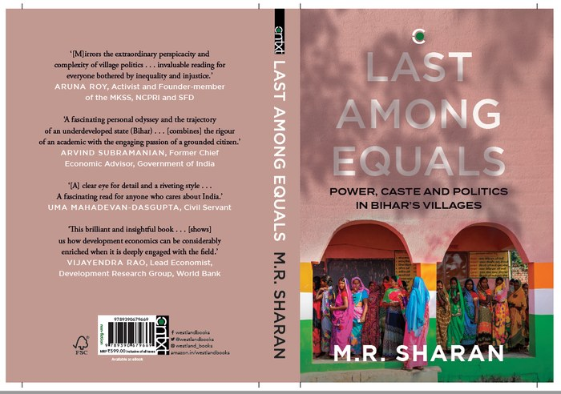
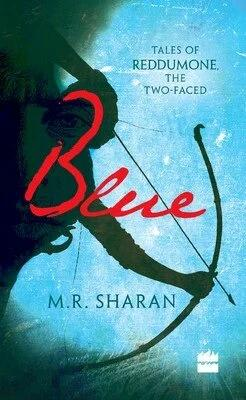
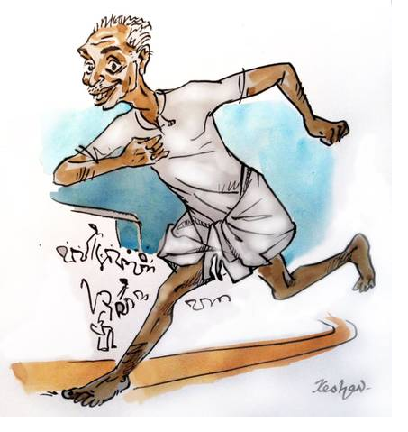

Writing
Narrative Non-fiction

Last Among Equals: Caste, Power and Politics in Bihar’s Villages (Context/Amazon-Westland, 2021)
On Amazon India and in bookstores across India.
Sanjay Sahni was living an ‘araam zindagi’ in Delhi, working as an electrician, until a chance encounter with a computer sent him hurtling into the labyrinth that is the NREGA — one of the world’s largest rural poverty alleviation programmes — and the corruption within. It led him back to his village, where eventually, he and his comrades (primarily women from the Dalit and most backward castes) formed the anti-corruption group Manrega Watch. Their tale is one strand of village politics, a story of resilience among citizens, those outside the system.
But what of the ‘insiders’? The complex local-state unit of the village has at the top a mukhiya, who, like the one in Sanjay’s village, wields great power, even to do harm. Ward members — closest to their constituents and the most socially representative group in the panchayati raj system — are at the bottom of this structure.
Development economist M.R. Sharan brings these two interweaving strands of insiders and outsiders together to tell a tale of hope: that those on the margins can challenge entrenched hierarchies. Through government action — reservation, decentralisation, transparency measures — and through citizenly engagement, social movements and elections, change is possible, if not necessarily easy. Take the resourceful ward member, Kamal Manjhi, who repurposed the grievance redressal system to complain against the state: this was essentially a member of the local state, using a state mechanism to arm-twist another part of the state to do its job.
Last Among Equals eschews the usual sweeping narratives of national and state politics, reaching instead for the ‘swirling, vivid sub-narratives that escape easy categorisations’, the darkness of the material leavened with deep empathy. The result is a captivating, often searing narrative of how lives are lived in the villages of Bihar — and indeed in much of India.
Novel

Blue: Tales of Reddumone, The Two-Faced (HarperCollins, 2014)
On Amazon India and Amazon US.
This is the tale of Reddumone, or Two-Face, a Lankan spy. It is also the tale of Rama of Ayodhya. Clever, loyal and powerful, Reddumone is the perfect spy. Noble, strong and brave, Rama is the quintessential king. Their paths cross often, over several decades and across the length of the Indian subcontinent. Against a background of civil wars and murderous coups, the two form a strange, knotty friendship. It is a bond marked by mutual respect, divided by loyalty and complicated by a seemingly impossible ideal: dharma. The novel follows Rama’s moral arc: from an unyielding adherence to dharma to a more nuanced understanding of righteousness. Reddumone too follows a similar curve, balancing loyalty and love as he finds his own moral centre. In this self-assured and complex debut, M.R. Sharan blends mythology with philosophy and spiritual yearning with political machinations. Blue is, ultimately, a love song to Rama, the man and the idea of him. It will forever change the way you read the Ramayana.
“It’s a familiar story but the novel narrator brings an edge to the telling that is irresistible. In addition to the judicious selection of the well-known episodes that the spy witnesses, there is also Reddumone’s own backstory, of growing up on the idyllic beaches of Lanka, gradually becoming aware that his father was no ordinary travelling merchant, and of the impact of his profession on his mother. Sharan revels in the greys, debating right and wrong, good and evil, choice and compulsion without ever getting weighed down by their enormity.” Review in Mint
Articles
Policy
Essays
Sport
